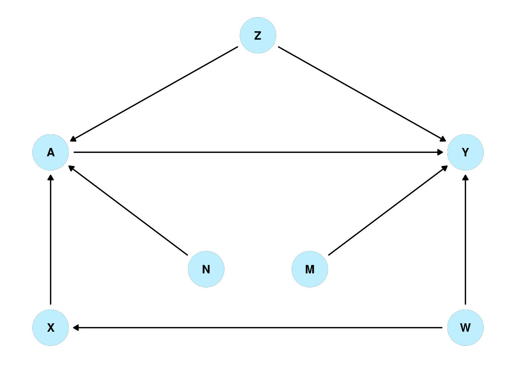

Doubly Robust Estimators
Doubly Robust estimation allows researchers to take advantage of both an outcome model and a model of treatment. If one or both of the models is correct, the doubly robust estimator will produce an accurate estimate of the causal effect. Here I’ll focus on doubly robust estimation for a quantitative outcome and a binary treatment. Here is one such estimator:
\[\begin{aligned} &\frac{1}{n}\sum \left[ \hat{y}_1(\textrm{covariates}_i) + \frac{Y_i A_i}{\hat{e}(\textrm{covariates}_i)} - \frac{\hat{y}_1(\textrm{covariates}_i)*A_i}{\hat{e}(\textrm{covariates}_i)} \right] \\ -&\frac{1}{n}\sum \left[ \hat{y}_0(\textrm{covariates}_i) + \frac{Y_i(1 - A_i) }{1 - \hat{e}(\textrm{covariates}_i)} - \frac{\hat{y}_0(\textrm{covariates}_i)*(1 - A_i)}{1 - \hat{e}(\textrm{covariates}_i)} \right] \end{aligned}\]Where
\(\hat{y}_1(\textrm{covariates}_i)\) are the predicted values for each individual \(i\) with treatment \(1\).
\(Y_i\) and \(A_i\) are, respectively, the actual outcome and treatment values for each individual.
\(\hat{e}(\textrm{covariates}_i)\) are the predicted propensity scores for each individual \(i\).
The rest of this page will attempt to explain how the doubly robust property works in this estimator.
Simulation
This is the causal diagram for our simulated data:

Boring Methods
Consider a naive researcher who, not knowing anything about doubly robust estimators, creates two estimates of average causal effect. The naive researcher uses uses thorough research and input from experts to come up with two models:
The outcome is affected by the treatment, Z, W, and M.
Y ~ A + Z + W + M
The treatment an individual is assigned to is affected by X.
A ~ X
Since we simulated the data we know that they have arrived at the correct model of the outcome, but an incorrect model of the treatment. Using these models the researcher performs linear regression and inverse probability weighting to arrive at two different estimates of average causal effect.
| Outcome Formula | Y ~ A + Z + W + M |
| Exposure Formula | A ~ X |
| Causal Effect Estimate from Outcome Model | 1.007717 |
| Causal Effect Estimate from Treatment Model | 2.99333 |
The estimates are at odds and they can’t tell which of their models is failing. Both models have equivalently tiny p-values, both models are based on strong evidence from experts.
One Part of The Doubly Robust Estimator
The researcher then figures out a way to make an ever worse estimator that will use both models.
\[ \frac{1}{n}\sum \frac{\hat{y}_1(\textrm{covariates}_i)*A_i}{\hat{e}(\textrm{covariates}_i)} - \frac{1}{n}\sum \frac{\hat{y}_0(\textrm{covariates}_i)*(1- A_i)}{1-\hat{e}(\textrm{covariates}_i)} \]
By using both the outcome and treatment models, the researcher has ensured that this estimator will fail if either the model is wrong. Not only will it fail, but it will fail by the same amount as the individual estimators. This is very important.
With IPW
For simplicity let’s say IPW is
\[ \frac{1}{n}\sum \frac{Y_i A_i}{\hat{e}(\textrm{covariates}_i)} - \frac{1}{n}\sum \frac{Y_i (1-A_i)}{1-\hat{e}(\textrm{covariates}_i)} \]
Where \(Y_i\) are the actual outcome values. If the treatment model is correct this will produce a correct estimate of average causal effect.
Focus just on one side of the equation, and subtract the same side of the bad estimator above:
\[ \frac{1}{n}\sum \frac{Y_i A_i}{\hat{e}(\textrm{covariates}_i)} - \frac{\hat{y}_1(\textrm{covariates}_i)*A_i}{\hat{e}(\textrm{covariates}_i)} \]
Our researcher, sees that if they have a correct outcome model then \(Y_i A_i = \hat{y}(\textrm{covariates}_i)* A_i\) and so the whole thing would reduce zero.
| Outcome Formula | Y ~ A + Z + W + M |
| Exposure Formula | A ~ X |
| Outcome Model Estimate | 1.007717 |
| IPW Estimate | 2.99333 |
| \(\frac{1}{n}\sum \frac{Y_i A_i}{\hat{e}(\textrm{covariates}_i)}\) | 6.882267 |
| \(\frac{1}{n}\sum \frac{\hat{y}(\textrm{covariates}_i)*A_i}{\hat{e}(\textrm{covariates}_i)}\) | 6.882962 |
| Difference | -0.0006948846 |
Following this analysis our naive researcher thinks the causal estimate from the outcome model probably the right one. If it weren’t then, \(Y_i A_i \neq \hat{y}(\textrm{covariates}_i)* A_i\) the whole thing does not reduce to zero. Instead we might observe something like the first column:
| Outcome Formula | Y ~ A + X | Y ~ A |
| Exposure Formula | A ~ X + Z + N | A ~ M |
| Outcome Model Estimate | 2.882163 | 2.809673 |
| IPW Estimate | 1.033126 | 2.809669 |
| \(\frac{1}{n}\sum \frac{Y_i A_i}{\hat{e}(\textrm{covariates}_i)}\) | 6.491782 | 6.863526 |
| \(\frac{1}{n}\sum \frac{\hat{y}(\textrm{covariates}_i)*A_i}{\hat{e}(\textrm{covariates}_i)}\) | 6.875744 | 6.86353 |
| Difference | -0.3839619 | -4.192973e-06 |
Note the second column, this is not actually a way to tell if the outcome model is correct.
Nevertheless, we now have two of the three parts of the doubly robust estimator.
With Outcome Regression: The Full Estimator
We just saw how two parts of the doubly robust estimator add together to equal zero when the outcome model is correct. In the full doubly robust estimator we also add
\[ \frac{1}{n}\sum \hat{y}_1(\textrm{covariates}_i) - \hat{y}_0(\textrm{covariates}_i) \]
Since the other parts are zero when the outcome model is correct, the doubly robust estimator produces an estimate of average causal effect based on just the above sum.
So the full estimator is:
\[\begin{aligned} (\textrm{A}) \hskip 2em &\frac{1}{n}\sum \left[ \hat{y}_1(\textrm{covariates}_i) - \hat{y}_0(\textrm{covariates}_i) \right]\\ &\quad\quad \uparrow \textrm{Estimates correctly when the outcome model is correct} \\ \\ (\textrm{B}) \hskip 1.2em +&\frac{1}{n}\sum \left[ \frac{Y_i A_i}{\hat{e}(\textrm{covariates}_i)} - \frac{Y_i(1 - A_i) }{1 - \hat{e}(\textrm{covariates}_i)} \right]\\ &\quad\quad \uparrow \textrm{Estimates correctly when the treatment model is correct} \\ \\ (\textrm{C}) \hskip 1.2em -&\frac{1}{n}\sum \left[\frac{\hat{y}_1(\textrm{covariates}_i)*A_i}{\hat{e}(\textrm{covariates}_i)} - \frac{\hat{y}_0(\textrm{covariates}_i)*(1 - A_i)}{1 - \hat{e}(\textrm{covariates}_i)} \right] \\ &\quad\quad \uparrow \textrm{Estimates correctly when both models are correct} \\ \\ \end{aligned}\]Laid out like this, it is relatively simple to see how doubly robust estimation works. For example, if a researcher has an accurate exposure model and an inaccurate outcome model, \((\textrm{A})\) and \((\textrm{C})\) cancel each other out and we are left with just the accurate estimate based on the exposure model: \((\textrm{C})\). Take a little bit to think about the other possibilities yourself.
Testing Doubly Robust Estimation
| Accurate Models | Inaccurate Exposure Model | Inaccurate Exposure Model | Very Inaccurate Exposure Model | Inaccurate Models | |
|---|---|---|---|---|---|
| Outcome Formula | Y ~ A + Z + W + M | Y ~ A + Z + W + M | Y ~ A + Z + W + M | Y ~ A + Z + W + M | Y ~ A |
| Exposure Formula | A ~ Z + X + N | A ~ X + N | A ~ Z | A ~ N * N + N | A ~ X |
| Outcome Model Estimate | 1.007717 | 1.007717 | 1.007717 | 1.007717 | 2.809673 |
| IPW Estimate | 1.033126 | 3.006719 | 1.226492 | 2.821652 | 2.99333 |
| A | 1.007717 | 1.007717 | 1.007717 | 1.007717 | 2.809673 |
| B | 1.000927 | 2.983594 | 1.229161 | 2.821657 | 2.974662 |
| C | -0.9932444 | -2.974163 | -1.230576 | -2.820911 | -2.790294 |
| Doubly Robust Estimate | 1.015399 | 1.017147 | 1.006302 | 1.008463 | 2.994041 |
The real causal effect in our simulated data is 1. With inaccurate exposure models and an accurate outcome model we observe, just as we would expect, \((\textrm{B})\) and \((\textrm{C})\) cancel out and we are left with an estimate based on \((\textrm{A})\). When both models are inaccurate this does not happen.
| Accurate Models | Inaccurate Outcome Model | Inaccurate Outcome Model | Very Inaccurate Outcome Model | Inaccurate Models | Inaccurate Models | |
|---|---|---|---|---|---|---|
| Outcome Formula | Y ~ A + Z + W + M | Y ~ A + N | Y ~ A * Z + W | Y ~ A | Y ~ A | Y ~ A + M |
| Exposure Formula | A ~ Z + X + N | A ~ Z + X + N | A ~ Z + X + N | A ~ Z + X + N | A ~ X | A ~ 1 |
| Outcome Model Estimate | 1.007717 | 2.818322 | 1.00705 | 2.809673 | 2.809673 | 2.809656 |
| IPW Estimate | 1.033126 | 1.033126 | 1.033126 | 1.033126 | 2.99333 | 2.809673 |
| A | 1.007717 | 2.818322 | 1.008797 | 2.809673 | 2.809673 | 2.809656 |
| B | 1.000927 | 1.000927 | 1.000927 | 1.000927 | 2.974662 | 2.809673 |
| C | -0.9932444 | -2.79385 | -0.9936951 | -2.785065 | -2.790294 | -2.809673 |
| Doubly Robust Estimate | 1.015399 | 1.025398 | 1.016028 | 1.025535 | 2.994041 | 2.809656 |
When we have an accurate exposure and an inaccurate outcome model, \((\textrm{A})\) and \((\textrm{C})\) cancel out and we are left with an estimate based on \((\textrm{B})\).
Works Cited
(in progress)
https://doi.org/10.1093/aje/kwq439
https://www.degruyter.com/document/doi/10.1515/jci-2018-0016/html?lang=en